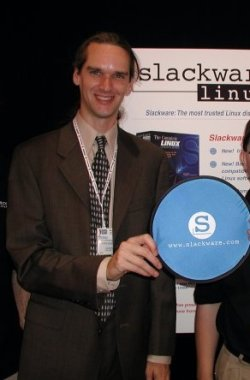
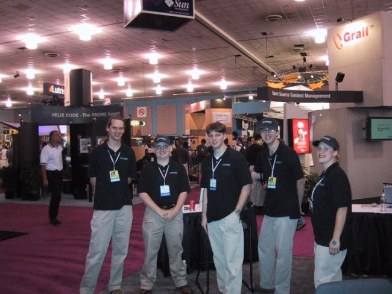

Sucha's Homepage ~ Slackware Team
Slackware Team
看看 Slackware 的维护者和他的“小分队”，:)
Slackware 的维护者
这就是 Patrick Volkerding。想对 Patrick 了解更多？请看<<Patrick Volkerding 与 Linux>>。


Slackware "小分队"
Patrick Volkerding, David, Logan, Chris, and Kate Ornberg.

2004- ©
Sucha. Powered by MarkdownProjectCompositor.